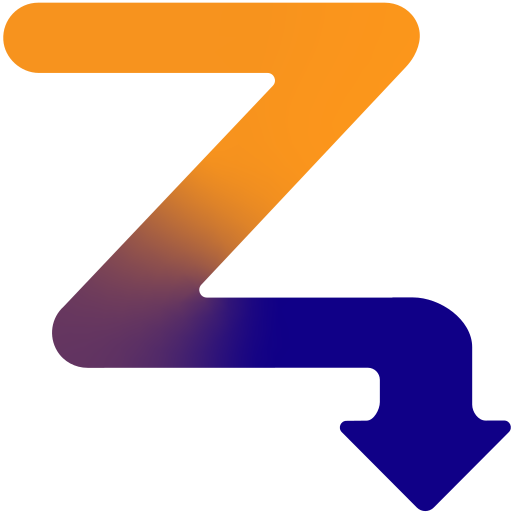

     <div id="main-menu-center">
      <div id="welcome-msg">
        <span class="welcome-top">Welcome to</span>
        <span class="welcome-main">
          low
        </span>
        <span class="welcome-accent"></span>
      </div>

      <div id="main-buttons">
        <div id="start-wrapper">
          <button id="start-btn" type="button" data-workout="free">Quick Ride</button>
        </div>

        <div id="workouts-wrapper">
          <button id="workouts-btn" type="button">Workouts</button>
        </div>

        <div id="menu-links">
          <button id="peer-connect-btn" class="menu-link" data-workout="peerServer">Connect to Peer</button>
          <button id="connect-btn" class="menu-link">Connect Trainer</button>
          <button id="customize-btn" class="menu-link" onclick="viewManager.setView(viewManager.views.playerCustomization);">Customize Character</button>
          <button id="settings-btn" class="menu-link">Settings</button>
        </div>
      </div>

      <div id="workout-options" class="hidden">
        <button id="workout-back" class="menu-link">← Back</button>
        <div class="workout-row">
          <button class="workout-option" data-workout="ramp">
            <span class="workout-name">Ramp Test</span>
            <span class="workout-desc">Find your FTP</span>
          </button>
          <button class="workout-option" data-workout="sprint">
            <span class="workout-name">Sprint Intervals</span>
            <!-- Update with actual seconds when sprint intervals is implemented -->
            <span class="workout-desc">[x]s on / [x]s off</span>
          </button>
        </div>
      </div>

      <div id="menu-settings">
        <button id="settings-back" class="menu-link">← Back</button>
        
        <span id="devMode" class="hud-btn">
          <label for="dev-toggle">Dev mode</label>
          <label class="toggle-switch">
            <input type="checkbox" id="dev-toggle" />
            <span class="toggle-slider"></span>
          </label>
        </span>

        <div id="peer-section">
          <span id="peer-host" class="hud-btn">
            <label for="peer-toggle">Host P2P</label>
            <label class="toggle-switch">
            <input type="checkbox" id="peer-toggle" />
            <span class="toggle-slider"></span>
          </label>
        </span>
          <span id="peer-name" class="hud-btn">
            <label for="name-input">Host name: </label>
            <input id="name-input" />
          </span>
        </div>
        
        <span id="pacer" class="hud-btn">
          <label for="pacer-speed">Pacer:</label>
          <input id="pacer-speed" type="number" min="5" max="60" value="20" step="1" />
          <span class="speedUnit">km/h</span>
        </span>

        <span id="weight" class="hud-btn">
          <label for="rider-weight">Weight:</label>
          <input id="rider-weight" type="number" min="40" max="150" value="70" step="1" />
          <span class="weightUnit">kg</span>
        </span>

        <span id="units-row" class="hud-btn">
          <label>Units:</label>
          <div class="units-group">
            <div class="seg-toggle">
              <button class="seg-btn active" data-unit="km/h" data-group="speed">km/h</button>
              <button class="seg-btn" data-unit="mph" data-group="speed">mph</button>
            </div>
            <div class="seg-toggle">
              <button class="seg-btn active" data-unit="kg" data-group="weight">kg</button>
              <button class="seg-btn" data-unit="lb" data-group="weight">lb</button>
            </div>
          </div>
        </span>
        
        <button id="connect-strava-btn" class="hud-btn">
          Connect Strava
        </button>
        
        <button id="clear-btn" class="hud-btn">Clear settings</button>
      </div>
    </div>

    <div id="menu-footer">
      <a href="javascript:null" onclick="viewManager.setView(viewManager.views.changelog);">v1.0.0-alpha.4</a>
      <span>·</span>
      <a href="https://github.com/gioandjake/zlow/issues/new/choose" target="_blank">Report a bug</a>
    </div>

    <div id="sky-gradient"></div>
</div>